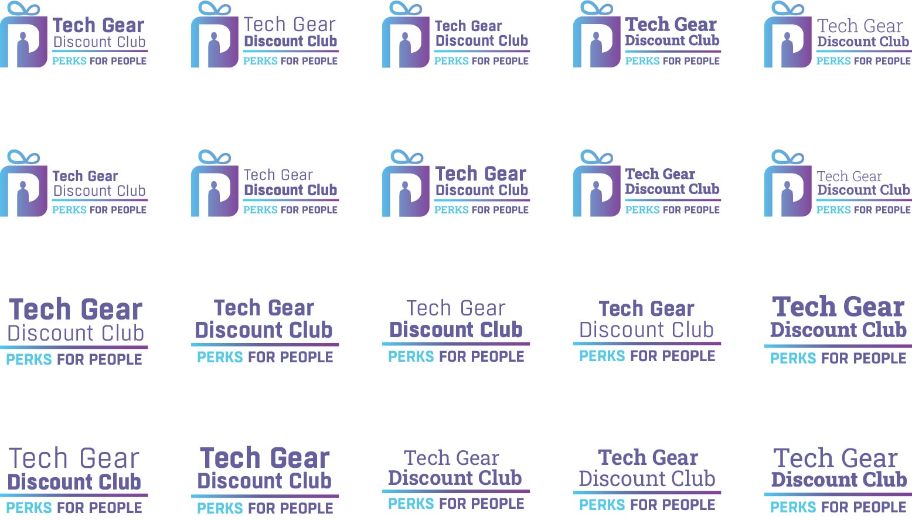
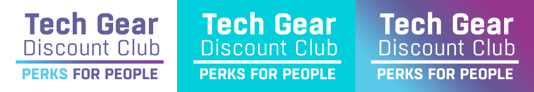
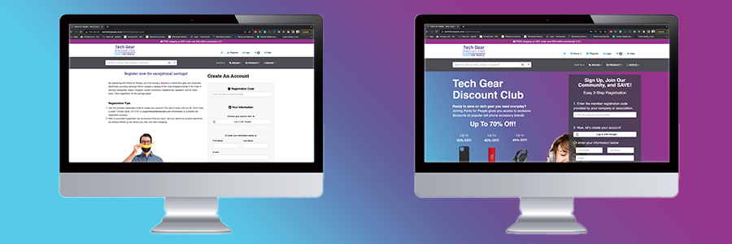
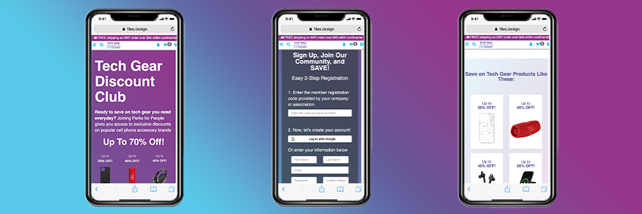
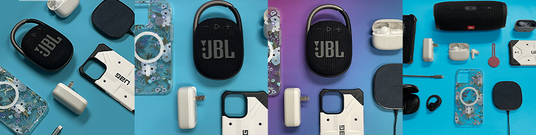

Perks for People

Perks for People is an employee benefit program that offers a wide assortment of mobile accessories at steeply discounted prices. While it was launched in 2019 it went inactive during Covid and was soft relaunched in Q4 2021. Part of the relaunch included a redesign of the logo, the registration/landing page and the creation of new marketing materials.
Logo Redesign
The new direction from management was to put an heavy emphasis on the tag line "Tech Gear Discount Club". My direction for the logo redesign was to make “Tech Gear Discount Club” that main focus of the logo and to de-emphasize “Perks for People”. The reasoning was that no one knows what Perks for People is so they wanted to logo to explain the brand right away. I did recommend a full change of the name to Tech Gear Discount Club since the url is available but my recommendation was shot down because “eventually we will get back to focusing on Perks for People as the name”.
a grid of all proposed and explored logos
The new Perks for People logo. This one was select because it was the clearest to read and "Tech Gear" was the first thing people would focus on.
New Registration Page
With the new relaunch of Perks for People, the registration page became the de facto landing page for most customers as that link was what our Sales team was sending companies that signed up for the program. The old design did not really explain much about our brand and was very light on both content and design. The new design needed to quickly and accurately display the value of the website to quickly convince people to sign up.
 Link to View Live Registration PapeThe new registration page is divided in half with one side talking about and trying to convince visitors to sign up and the other part being the registration form itself. The registration form was kept as simple as possible with the minimum number of form fields. The other half where we described the program's benefits. We led with examples of our leading brands and projects and highlighted the steep discounts available on our website for these highly sought after products. We also added carousels further down the page to give a wider sampling of what projects and brands we offer and to show what companies we are currently working with to add additional credibility to the website. After the new design was launched the registration percentage increased from 20% to 25% and the bounce rate dropped from 8% to 6%.
Around 50% of the traffic to the registration page was from mobile phones so page layout and design was built with responsiveness in mind
Marketing Materials
In addition to a new registration and logo, relaunch also included and over haul of email marketing and new brand photography. The email redesigned was the welcome email which includes a discount code for new users to save on their first order to encourage users to make their first purchase on the website. The new email design saw the new user code usage rate double after it was implemented.
In addition to a new registration and logo, relaunch also included an overhaul of email marketing and new brand photography. The email redesigned was the welcome email which includes a discount code for new users to save on their first order to encourage users to make their first purchase on the website. The new email design saw the new user code usage rate double after it was implemented. 